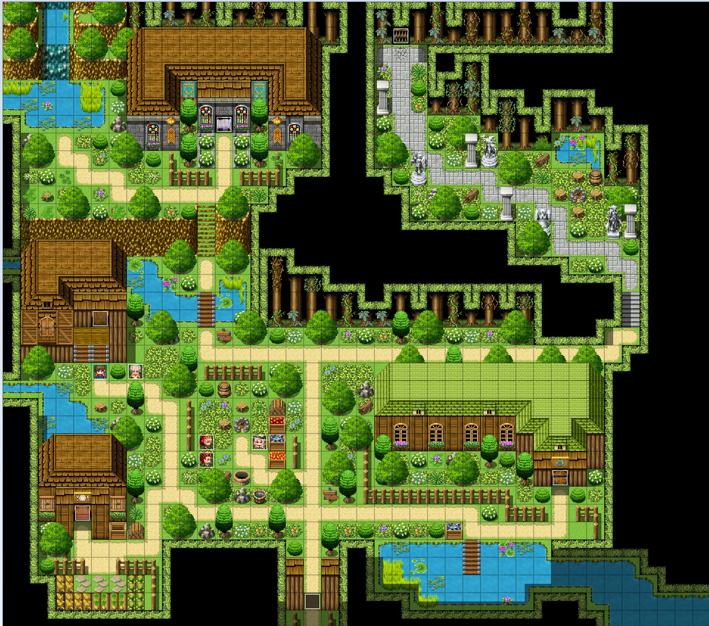

Hi, I’m Conner Paeth, a passionate sound designer specializing in audio for video games. From the rustle of leaves in a forest to the sounds of epic battles, I bring stories to life through sound. Explore my portfolio to hear how sound can transform gameplay into unforgettable adventures. Whether you're building a vibrant indie title or a groundbreaking AAA masterpiece, let’s collaborate to make your game truly sound amazing. Feel free to reach out—I’d love to help bring your world to life through sound.
